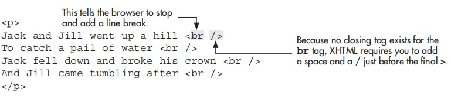
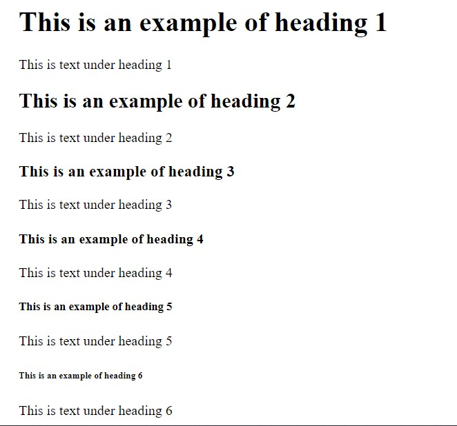
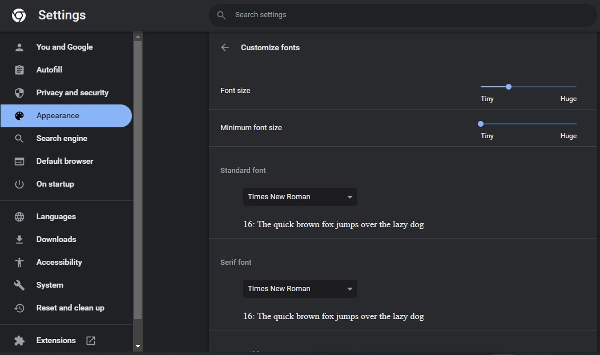
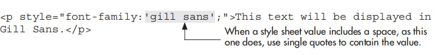
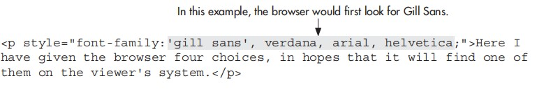

The original versions of HTML allowed you many ways to format text on a web page. However, most of these methods were deprecated by the W3C when they later revised the HTML standards. This means the W3C discourages the use of those tags, in favor of style sheets. Why? Because separating the styling details from the rest of the content makes for a much cleaner, more efficient web page—one more easily understood by browsers, search engines, and even your web site visitors.
Previous editions of this book explained those retired HTML tags—such as <font> and <b>, in case you’ve heard of them—as well as alternative ways to format text with style sheets. The only reason we continued to use those old tags was that many new browsers weren’t yet supporting style sheets. But times have changed, and there is no longer any valid reason for most web developers to use the font tag (or any other retired tags). With that said, the rest of this chapter will focus on how to use style sheets to format the text of your web pages.
One important aspect of developing a web page is planning—especially when it comes to organizing sections of content on that page. A great strength of style sheets is the ability to easily apply groups of formatting characteristics to whole sections of text. For example, suppose you have three paragraphs and a list making up the main body copy of a page, and you want to see how the text in that section looks with a different font face and size. With the old font tag you would need to make multiple code changes just to try a different font. But as long as you’ve organized your content appropriately and used style sheets, the code changes will be minimal.
The key to all this is the div tag. Amazingly, adding a simple <div> to the code on your page will cause no outward change in appearance when viewed in the browser. In fact, the div tag does nothing by itself—it doesn’t even cause a line break. It is simply used as a container, allowing you to manipulate its contents later with style sheets.
It’s normal for a web page to have natural divisions according to the type of content found in each area of the page. A few common divisions or sections of a page might include the navigation, the body copy, the header, and the footer. The code used to separate each section might look similar to the following:
<body>
<div id="header">
Header content goes here.
</div>
<div id="bodyCopy">
Body copy goes here.
</div>
<div id="footer">
Footer content goes here.
</div>
</body>
Once you’ve set up basic divisions like this—leaving the formatting to CSS instead of the HTML tables—the possibilities are endless. Need to move the navigation from the top of your page to the bottom . . . on ten different pages? If you put all of it into its own div . . . piece of cake! Not only is it easy to move that entire navigation bar, you only have to edit the style sheet—and not the individual HTML pages—to do so.
When using the div tag to separate content areas, you also need to add the id attribute to give each division a name (as I did with header, bodyCopy, and footer in the previous code example). In the same way that a unique Social Security number is assigned as identification— ID—for each person living in the U.S., so should a unique name be given to each division on a web page. Once you’ve named your divisions, these content areas can easily be formatted in the site’s style sheet, which might look something like the following:
#header {border: 1px;}
#bodyCopy {font-family: Verdana; font-size: 12pt;}
#footer {font-size: 10pt;}
You can also use the br tag to add a line break in your HTML page. Typing the br tag in HTML is the same as clicking the RETURN or ENTER key on your keyboard in a word processor. It causes the browser to stop printing text on that line and drop down to the next line on the page.
One of the earliest means of formatting text was the heading tag. It is available in six levels of importance from %lt;h1> down to %lt;h6>, as shown in the following code:
<body>
<h1>This is an example of heading 1 </h1>
This is text under heading 1
<h2>This is an example of heading 2</h2>
This is text under heading 2
<h3>This is an example of heading 3 </h3>
This is text under heading 3
<h4>This is an example of heading 4 </h4>
This is text under heading 4
<h5>This is an example of heading 5 </h5>
This is text under heading 5
<h6>This is an example of heading 6 </h6>
This is text under heading 6
</body>
output:

Note:
Using a heading tag automatically adds breaks before and after the heading because
these tags are block-level container tags.
You use the heading tags to tell the browser which pieces of text function as headings, and then specify how to style them with CSS. So, you could quickly adjust the alignment of your headings with an inline style by using <h3 style="text-align: right;">. Likewise, you could use h3 as a selector in an internal style sheet (placed in between the opening and closing head tags on your page) to specify the formatting options of all level-3 headings on the page.
<style type="text/css">
h3 {
text-align: right;
}
</style>
Before you begin changing the font characteristics of a web page, you should note that visitors to your web site have the ultimate control over these font characteristics. The following screen shows how the user can customize one browser. Users can even choose to use their fonts, overriding page-specified fonts, so you should consider these tags as recommendations for the browser, but never rely on them for your page display.
When used in conjunction with the term font, the term face refers to the name of the font you’d like to use on your page. In style sheets, we specify the font face with the font-family property.
You can use the font-family property to specify virtually any font name you can think of, but the person viewing your web page will be unable to see your page in that font face unless he already has it loaded on his computer. So, if you specify your page to be displayed in Gill Sans font, but the person viewing your page doesn’t have Gill Sans, he will see your page in the browser’s default font face (usually Times New Roman).
To compensate for the possibility that not all visitors will have the font you specify, you can specify backup fonts in the value of the font-family property. If the browser cannot find the first font face listed on the viewer’s computer, it then looks for the second font face, and the third, and so forth until it comes up with a match. Once again, if the browser doesn’t find a font face listed in your HTML file that is actually installed on the viewer’s system, it displays the page in the default font (usually Times New Roman).

Note:
This process of providing a backup font name is also referred to as cascading.
You can also use style sheets to change the size of the text. This is accomplished with the font-size property and any of the following possible values, as in: font-size: 12pt.
● Keyword: xx-small, x-small, small, medium,
large, x-large, or
xx-large
● Relative: size Smaller or larger
● Absolute size: Number followed by the unit, as in 12pt (for 12 point) or 8px (for 8 pixels)